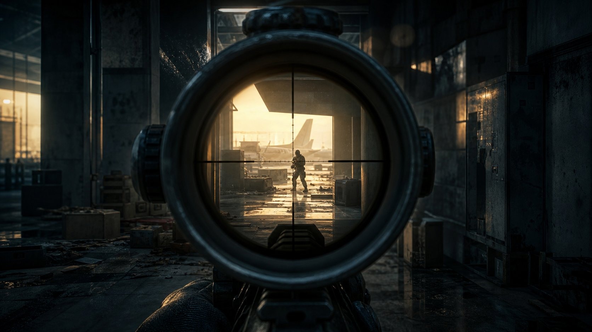

1. Rôle dans le meta S7
Le M24 (S-tier, 300 000 K) est l'apex bolt-action : avec les headshots renforcés S7, il oneshot la majorité des opérateurs. Le Mosin-Nagant (C-tier, 90 000 K) reste le bolt budget le plus rentable du premier wipe au kilometer final. En 9x54R, vérifiez TOUJOURS la pénétration : en S7 la RNG est morte, un tir bien planifié perce.
2. Conseils de jeu
- Munitions d'abord : en S7, la RNG de pénétration T5/T6 a disparu — la bonne mun gagne presque toujours. Tier 3 minimum, Tier 4-5 pour les modes haut de gamme.
- Caps par mode : Normal = T4 max, Lockdown = T5 max, Forbidden = T6. Adaptez votre kit au lobby, pas à votre ego.
- Jouez LONG : sniper ABI est un jeu de patience, pas de twitch.
- Après CHAQUE tir, repositionnez — le son vous trahit systématiquement.
- Pré-médication + position surélevée = 80 % de vos duels gagnés.
À retenir
Un sniper sans spotter en duo = moitié de la puissance. En solo, fixez Northridge et les crêtes d'Airport.
Meta complet
Croisez ces analyses avec la Tier List S7 complète et nos builds recommandés (A545 900 RPM, AK-12 laser budget, M24 oneshot).
Fusils de precision : ce que la cadence ne dit pas
Un fusil de precision se juge sur trois axes, et le premier n'est pas la cadence. La portee utile : le M24 atteint 120 metres, le SJ16 125 mètres, le Mosin-Nagant 100. La cadence : 26 à 30 coups par minute pour les trois a verrou. Et l'ergonomie : c'est la que le Mosin-Nagant se distingue, avec 22 points seulement, contre 39 pour le M24 et 32 pour le SJ16. Traduction : le Mosin est l'arme la moins maniable de la famille, la plus longue à relever après chaque tir. Le M24 est l'equilibre : le plus maniable des trois, avec une portee superieure a cent vingt metres. Le SJ16 va le plus loin, au prix de l'ergonomie. Pour la precision, la cadence ne compte presque pas : ce qui compte est le temps entre le declenchement et la capacite a tenir sa respiration.
| Arme | Calibre | Cadence | Ergonomie | Portée (m) | Recul vert. | Modes de tir |
|---|---|---|---|---|---|---|
| SJ16 Bolt-Action Rifle | .338 Lapua | 26 | 32 | 125 | 11 | Manuel |
| M24 Bolt-Action Rifle | 7.62×51mm | 30 | 39 | 120 | 7 | Manuel |
| Mosin-Nagant Bolt-Action Rifle | 7.62×54mm | 28 | 22 | 100 | 9 | Manuel |
| SVDS Marksman Rifle | 7.62×54mm | 225 | 44 | 83 | 43 | Semi-automatique |
| M110 Marksman Rifle | 7.62×51mm | 300 | 58 | 80 | 58 | Semi-automatique |
| U191 Marksman Rifle | 5.8×42mm | 750 | 46 | 64 | 63 | Semi-automatique / Automatique |
| ML Lever-Action Rifle | .44 Magnum | 75 | 62 | 64 | 37 | Semi-automatique |
| MK14 Marksman Rifle | 7.62×51mm | 700 | 59 | 55 | 57 | Semi-automatique / Automatique |
| VSS Marksman Rifle | 9×39mm | 850 | 57 | 26 | 65 | Semi-automatique / Automatique |
3. Les règles qui dictent le sniper
Le sniper n'est pas une arme de combat, c'est une arme de position. Tout se joue avant le tir : l'angle, le support, la ligne de vue. LeocularScope est le composant le plus cher et le plus déterminant du kit, et c'est lui — pas le canon — qui décide si votre tir compte.
- Plafonds par mode : Normal = T4 maximum, Lockdown = T5 maximum, Forbidden = T6. Le choix du mode décide de votre tier avant même votre budget.
- Plafond de valeur : 900 000 K d'équipement en Lockdown. Au-delà, le raid refuse de démarrer.
- RNG de pénétration supprimée : depuis la S7, la bonne munition traverse presque toujours. comptez sur votre munition, pas sur la chance.
- TTK allongé, headshots récompensés : la précision compte davantage qu'en S6. Le premier tir placé vaut plus qu'une rafale.
4. Les munitions à connaître
| Munition | Armes | Ce qu'elle change |
|---|---|---|
| 8.8×24mm (T5) | M24, Mosin-Nagant (haut niveau) | La pénétration maximale : le tir soutenu en pleine tête traverse. |
| 7.62×54mm LPS (T4) | Mosin, M24 | Classique, très létal, mais la vitesse chute sur la distance. |
| 7.62×51mm M80 (T5) | M110, SVDS | Plus contrôlable que le 7.62×54, avec moins de STOP. |
| .338 LM (T6) | CheyTac M200 | Le haut du panier : dégâts et de pénétration, avec une seule balle sans toucher le |
5. Quel kit pour quel budget
| Profil | Budget | Configuration | Usage |
|---|---|---|---|
| Débutant | 120 000 – 200 000 K | M24, lunette 4x, bipied | Tirs d'appui sur un toit |
| Confirmé | 250 000 – 450 000 K | CheyTac ou M24 haut niveau | One-shot en T5-T6 |
| Équipier | 300 000 – 600 000 K | 8x stabilized, support lourd | Position de verrouillage |
6. Les erreurs qui coûtent cher
- Tirer en position debout : le premier tir est perdu, le second est médiocre. La Opticscompte autant que l'arme.
- Exposer sa position : le flash ou le son de la détente trahit. Un sniper audible est un sniper mort.
- Oublier le bipied ou le sac de stabilisation : la dispersion ouverte vous fait rater ce que le canon ne pardonne pas.
- Choisir la 7.62×54 contre une armure T6 : la LPS ne perce plus à distance.
7. FAQ
Quel sniper pour commencer ?
Le M24 est le plus pardonnant : recul gérable, optique lisible, et un one-shot régulier. Le Mosin est plus fort mais plus exigeant.
Faut-il un support ?
Toujours. Un sniper sans support perd sa précision à chaque tir.
Les snipers sont-ils rentables ?
En solo, oui si vous savez jouer les cartes ouvertes. En escouade, vous êtes souvent plus utile en DMR.
Comment stabiliser un tir ?
La compensation de recul d'arme règle le vertical, le support règle l'horizontal. Il faut les deux.